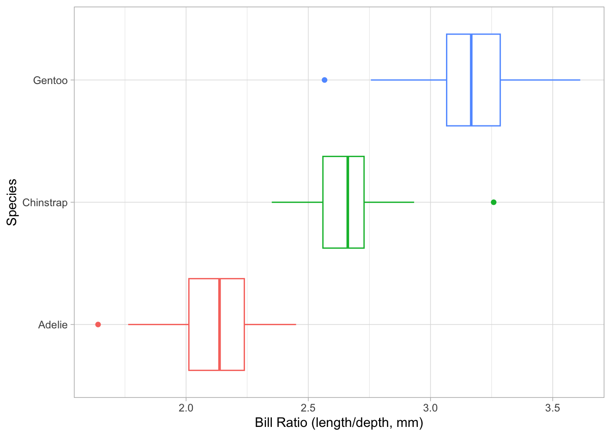
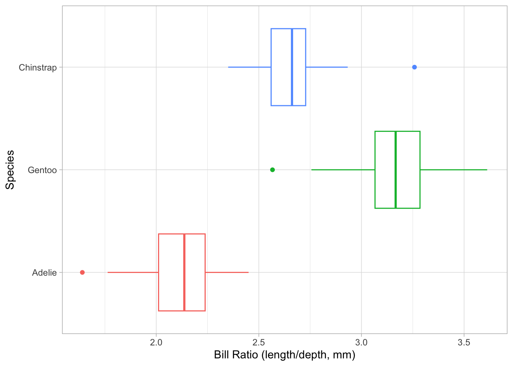
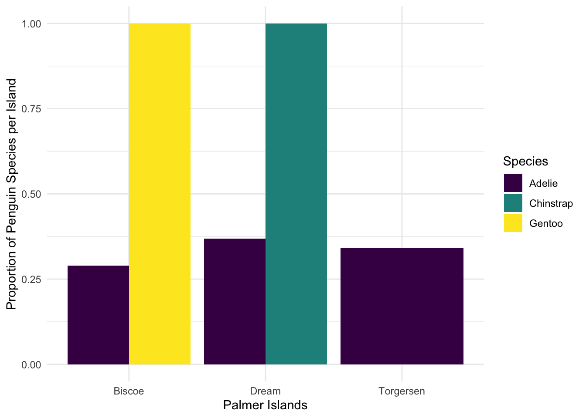

df |>
mutate(new_column_name = what_it_contains)Summarizing Penguins
Goals for the Activity
- Use
mutate(),group_by(), andsummarize()to answer some questions about the penguins.
- Learn a few other
dplyrfunctions such asdrop_na()andcount()that can be used in summarizing data.
- Learn the
dplyrfunctionscase_when()andacross()to clean up and create new variables.
- Connect summarized and created variables and graphics together to answer research questions.
THROUGHOUT THE Activity be sure to follow the Style Guide by doing the following:
- load the appropriate packages at the beginning of the Quarto document
- use proper spacing
- name all code chunks
- comment at least once in each code chunk to describe why you made your coding decisions
- add appropriate labels to all graphic axes
- use appropriate white space
Create new variables with mutate()
Use mutate() to add a new column, while keeping the existing columns. The general structure is:
For example, if I had a data frame df with columns A and B, I can add a new column C that is the sum of A and B as follows (note: you can also use sum(A,B) here instead of A + B):
df |>
mutate(C = A + B)For example, we can convert body mass to kilograms:
penguins |>
mutate(body_mass_kg = body_mass_g / 1000)# A tibble: 344 × 9
species island bill_length_mm bill_depth_mm flipper_length_mm body_mass_g
<fct> <fct> <dbl> <dbl> <int> <int>
1 Adelie Torgersen 39.1 18.7 181 3750
2 Adelie Torgersen 39.5 17.4 186 3800
3 Adelie Torgersen 40.3 18 195 3250
4 Adelie Torgersen NA NA NA NA
5 Adelie Torgersen 36.7 19.3 193 3450
6 Adelie Torgersen 39.3 20.6 190 3650
7 Adelie Torgersen 38.9 17.8 181 3625
8 Adelie Torgersen 39.2 19.6 195 4675
9 Adelie Torgersen 34.1 18.1 193 3475
10 Adelie Torgersen 42 20.2 190 4250
# ℹ 334 more rows
# ℹ 3 more variables: sex <fct>, year <int>, body_mass_kg <dbl>Notice that for some variables we have NA listed for missing values. We can use drop_na() to remove the missing values from those variables
penguins |>
drop_na() #if we leave it blank it will remove any row with an NA# A tibble: 333 × 8
species island bill_length_mm bill_depth_mm flipper_length_mm body_mass_g
<fct> <fct> <dbl> <dbl> <int> <int>
1 Adelie Torgersen 39.1 18.7 181 3750
2 Adelie Torgersen 39.5 17.4 186 3800
3 Adelie Torgersen 40.3 18 195 3250
4 Adelie Torgersen 36.7 19.3 193 3450
5 Adelie Torgersen 39.3 20.6 190 3650
6 Adelie Torgersen 38.9 17.8 181 3625
7 Adelie Torgersen 39.2 19.6 195 4675
8 Adelie Torgersen 41.1 17.6 182 3200
9 Adelie Torgersen 38.6 21.2 191 3800
10 Adelie Torgersen 34.6 21.1 198 4400
# ℹ 323 more rows
# ℹ 2 more variables: sex <fct>, year <int>penguins |>
drop_na(sex) #adding a variable, removes rows with NA just for that variable# A tibble: 333 × 8
species island bill_length_mm bill_depth_mm flipper_length_mm body_mass_g
<fct> <fct> <dbl> <dbl> <int> <int>
1 Adelie Torgersen 39.1 18.7 181 3750
2 Adelie Torgersen 39.5 17.4 186 3800
3 Adelie Torgersen 40.3 18 195 3250
4 Adelie Torgersen 36.7 19.3 193 3450
5 Adelie Torgersen 39.3 20.6 190 3650
6 Adelie Torgersen 38.9 17.8 181 3625
7 Adelie Torgersen 39.2 19.6 195 4675
8 Adelie Torgersen 41.1 17.6 182 3200
9 Adelie Torgersen 38.6 21.2 191 3800
10 Adelie Torgersen 34.6 21.1 198 4400
# ℹ 323 more rows
# ℹ 2 more variables: sex <fct>, year <int>Evaluating the Bill Size
Create new variable called bill_ratio that is the ratio of length to depth (length/depth)
penguins <- penguins %>%
mutate(penguins, bill_ratio = (bill_length_mm/bill_depth_mm))Now create a boxplot of bill_ratio split by species. Be sure to add labels to the axes. You can add other modifications if you want as well (fill/color, theme, etc).
penguins %>%
ggplot() +
geom_boxplot(mapping = aes(x = bill_ratio,
y = species,
color = species),
show.legend = FALSE) +
theme_light() +
labs(x="Bill Ratio (length/depth, mm)",
y = "Species")Warning: Removed 2 rows containing non-finite outside the scale range
(`stat_boxplot()`).
Add three new columns to penguins within one mutate() function: one column that contains the bill ratio (bill length / bill depth), one that contains the body mass converted to kg, and one that contains the flipper length converted to meters.
penguins |>
mutate(bill_ratio = (bill_length_mm/bill_depth_mm),
body_mass_kg = (body_mass_g/1000),
flipper_length_m = (flipper_length_mm/1000))# A tibble: 344 × 11
species island bill_length_mm bill_depth_mm flipper_length_mm body_mass_g
<fct> <fct> <dbl> <dbl> <int> <int>
1 Adelie Torgersen 39.1 18.7 181 3750
2 Adelie Torgersen 39.5 17.4 186 3800
3 Adelie Torgersen 40.3 18 195 3250
4 Adelie Torgersen NA NA NA NA
5 Adelie Torgersen 36.7 19.3 193 3450
6 Adelie Torgersen 39.3 20.6 190 3650
7 Adelie Torgersen 38.9 17.8 181 3625
8 Adelie Torgersen 39.2 19.6 195 4675
9 Adelie Torgersen 34.1 18.1 193 3475
10 Adelie Torgersen 42 20.2 190 4250
# ℹ 334 more rows
# ℹ 5 more variables: sex <fct>, year <int>, bill_ratio <dbl>,
# body_mass_kg <dbl>, flipper_length_m <dbl>We can also use mutate() to modify an existing variable. By default, R reports factors in alphabetical order (you may notice in your boxplot they always print in the same order, Adelie, Chinstrap, Gentoo). If we want to reorder, we can use a function fct_relevel() from the forcats package, which we will learn about in a few weeks. Modify the code below to calculate the bill_ratio and then recreate the boxplot from above by species - how does it differ?
penguins |>
mutate(species =
fct_relevel(species, "Adelie", "Gentoo", "Chinstrap"),
bill_ratio = (bill_length_mm/bill_depth_mm)) |>
ggplot() +
geom_boxplot(mapping = aes(x = bill_ratio,
y = species,
color = species),
show.legend = FALSE) +
theme_light() +
labs(x="Bill Ratio (length/depth, mm)",
y = "Species")Warning: Removed 2 rows containing non-finite outside the scale range
(`stat_boxplot()`).
Summarize data using group_by() and summarize()
Use the combination of group_by() and summarize() to find find summary statistics for different groups, and put them in a nice table.
group_by() “takes an existing table and converts it into a grouped table where operations are performed ‘by group’”
summarize() “creates a new data frame. It will have one (or more) rows for each combination of grouping variables; if there are no grouping variables, the output will have a single row summarizing all observations in the input. It will contain one column for each grouping variable and one column for each of the summary statistics that you have specified”
For example, we can calculate the mean and standard deviation for body mass:
penguins |>
group_by(species) |>
summarize(mass_mean = mean(body_mass_g, na.rm = TRUE),
mass_sd = sd(body_mass_g, na.rm = TRUE))# A tibble: 3 × 3
species mass_mean mass_sd
<fct> <dbl> <dbl>
1 Adelie 3701. 459.
2 Chinstrap 3733. 384.
3 Gentoo 5076. 504.Note, that na.rm = TRUE removes NA from the calculations instead of removing them from the data like drop_na(). Often, errors reported with mean() and similar functions are because there are NA in the data.
Second Note, if you use mosaic in your statistics class, note that mean() used here is from base R, so there is no ~ in front of the variable. If you wanted to use mosaic you can, you will just need to modify the syntax:
- Base R:
mean(x)
- Mosaic:
mean(~x)
Group by Species and Sex
Find the mean and standard deviation of body mass in kilograms by species and sex.
penguins |>
drop_na() |>
mutate(body_mass_kg = (bill_length_mm/bill_depth_mm)) |>
group_by(species, sex) |>
summarize(mean(body_mass_kg))`summarise()` has grouped output by 'species'. You can override using the
`.groups` argument.# A tibble: 6 × 3
# Groups: species [3]
species sex `mean(body_mass_kg)`
<fct> <fct> <dbl>
1 Adelie female 2.12
2 Adelie male 2.12
3 Chinstrap female 2.65
4 Chinstrap male 2.66
5 Gentoo female 3.20
6 Gentoo male 3.15Starting with penguins, create a summary table containing the maximum and minimum length of flippers (call the columns flip_max and flip_min) for just Chinstrap penguins, grouped by island. (Hint - remember filter())
penguins %>%
filter(species == "Chinstrap") %>%
group_by(island) %>%
mutate(flip_max = max(flipper_length_mm),
flip_min = min(flipper_length_mm)) %>%
distinct(species, flip_max, flip_min)# A tibble: 1 × 4
# Groups: island [1]
island species flip_max flip_min
<fct> <fct> <int> <int>
1 Dream Chinstrap 212 178Starting with penguins, in a piped sequence:
- Add a new column called bill_ratio that is the ratio of bill length to bill depth (hint: mutate())
- Only keep columns species and bill_ratio
- Group the data by species
- Create a summary table containing the mean of the bill_ratio variable, by species (name the column in the summary table bill_ratio_mean)
penguins %>%
select(species, bill_ratio) %>%
group_by(species) %>%
drop_na(bill_ratio) %>%
summarise(mean(bill_ratio))# A tibble: 3 × 2
species `mean(bill_ratio)`
<fct> <dbl>
1 Adelie 2.12
2 Chinstrap 2.65
3 Gentoo 3.18New function across()
The across() function is especially useful within summarize() to efficiently create summary tables with one or more functions applied to multiple variables (columns).
Let’s compare two ways of doing the same thing: creating a summary table of mean values for all penguin size measurements ending in “mm” (bill depth, bill length, flipper length), by species.
Approach 1:
penguins |>
group_by(species) |>
summarize(bill_length_mean = mean(bill_length_mm, na.rm = TRUE),
bill_depth_mean = mean(bill_depth_mm, na.rm = TRUE),
flipper_length_mean = mean(flipper_length_mm, na.rm = TRUE))# A tibble: 3 × 4
species bill_length_mean bill_depth_mean flipper_length_mean
<fct> <dbl> <dbl> <dbl>
1 Adelie 38.8 18.3 190.
2 Chinstrap 48.8 18.4 196.
3 Gentoo 47.5 15.0 217.Approach 2:
penguins |>
group_by(species) |>
summarize(across(ends_with("mm"),
.fns = mean,
na.rm = TRUE))Warning: There was 1 warning in `summarize()`.
ℹ In argument: `across(ends_with("mm"), .fns = mean, na.rm = TRUE)`.
ℹ In group 1: `species = Adelie`.
Caused by warning:
! The `...` argument of `across()` is deprecated as of dplyr 1.1.0.
Supply arguments directly to `.fns` through an anonymous function instead.
# Previously
across(a:b, mean, na.rm = TRUE)
# Now
across(a:b, \(x) mean(x, na.rm = TRUE))# A tibble: 3 × 4
species bill_length_mm bill_depth_mm flipper_length_mm
<fct> <dbl> <dbl> <dbl>
1 Adelie 38.8 18.3 190.
2 Chinstrap 48.8 18.4 196.
3 Gentoo 47.5 15.0 217.We can modify multiple names by appending something to the beginning
penguins |>
group_by(year) |>
summarise(across(starts_with("bill"),
.fns = max,
na.rm = TRUE,
.names = "max_{.col}"))# A tibble: 3 × 4
year max_bill_length_mm max_bill_depth_mm max_bill_ratio
<int> <dbl> <dbl> <dbl>
1 2007 59.6 21.5 3.51
2 2008 54.3 21.1 3.46
3 2009 55.9 20.7 3.61or ending of the column name:
penguins |>
group_by(year) |>
summarise(across(starts_with("bill"),
.fns = max,
na.rm = TRUE,
.names = "{.col}_max"))# A tibble: 3 × 4
year bill_length_mm_max bill_depth_mm_max bill_ratio_max
<int> <dbl> <dbl> <dbl>
1 2007 59.6 21.5 3.51
2 2008 54.3 21.1 3.46
3 2009 55.9 20.7 3.61Starting from penguins, create a summary table that finds the mean and standard deviation for all variables containing the string “length”, grouped by penguin species. Update the column names to start with “avg_” or “sd_”, followed by the original column names.
There’s quite a bit happening here, so a little breakdown:
- We use
contains("length")to indicate we’ll apply the functions to any columns with the word “length” in the name
- Within
list()is where the functions to be applied across columns are given, and where their “names” of “avg” and “stdev” are set
- We use
.names =to define the final column names in the summary table. Here, the name should start with the function “name” specified above (“avg” or “stdev”), then an underscore, then the original column name (that’s what"{.fn}_{.col}"will do)
penguins |>
group_by(species) |>
summarize(across(contains("length"),
list(avg = mean, stdev = sd),
na.rm = TRUE,
.names = "{.fn}_{.col}"))# A tibble: 3 × 5
species avg_bill_length_mm stdev_bill_length_mm avg_flipper_length_mm
<fct> <dbl> <dbl> <dbl>
1 Adelie 38.8 2.66 190.
2 Chinstrap 48.8 3.34 196.
3 Gentoo 47.5 3.08 217.
# ℹ 1 more variable: stdev_flipper_length_mm <dbl>Practice with across()
Starting with penguins, group data by island then use across() to find the median value of groups for any columns containing the string “mm”.
Bonus Point: The names in the resulting table should be the original column name followed by an underscore, then the word “median” (e.g. colname_median).
penguins %>%
group_by(island) %>%
summarize(across(contains("mm"),
list(median = median),
na.rm = TRUE,
.names = "{.col}_median"))# A tibble: 3 × 4
island bill_length_mm_median bill_depth_mm_median flipper_length_mm_median
<fct> <dbl> <dbl> <dbl>
1 Biscoe 45.8 15.5 214
2 Dream 44.7 18.4 193
3 Torgersen 38.9 18.4 191Starting from penguins, write a piped sequence to:
- Exclude penguins observed on Biscoe Island
- Only keep variables species through
body_mass_g
- Rename the species variable to
spp_penguin
- Group the data by
spp_penguin
- Find the mean value for any variable containing the string “length”, by penguin species, with column names updated to the original column name appended with “_mean” at the end
penguins %>%
filter(island != "Biscoe") %>%
select(1:6) %>%
rename(spp_penguin = species) %>%
group_by(spp_penguin) %>%
summarize(across(contains("length"),
list(avg = mean),
na.rm = TRUE,
.names = "{.col}_mean"))# A tibble: 2 × 3
spp_penguin bill_length_mm_mean flipper_length_mm_mean
<fct> <dbl> <dbl>
1 Adelie 38.7 190.
2 Chinstrap 48.8 196.New Function count()
The dplyr::count() function wraps a bunch of things into one beautiful friendly line of code to help you find counts of observations by group. To demonstrate what it does, let’s find the counts of penguins in the penguins dataset by species in two different ways:
- Using
group_by() |> summarize()withn()to count observations
- Using
count()to do the exact same thing
penguins |>
group_by(species) |>
summarize(n = n())# A tibble: 3 × 2
species n
<fct> <int>
1 Adelie 152
2 Chinstrap 68
3 Gentoo 124penguins |>
count(species)# A tibble: 3 × 2
species n
<fct> <int>
1 Adelie 152
2 Chinstrap 68
3 Gentoo 124For example, what does the following code do?
penguins |>
count(species, year)# A tibble: 9 × 3
species year n
<fct> <int> <int>
1 Adelie 2007 50
2 Adelie 2008 50
3 Adelie 2009 52
4 Chinstrap 2007 26
5 Chinstrap 2008 18
6 Chinstrap 2009 24
7 Gentoo 2007 34
8 Gentoo 2008 46
9 Gentoo 2009 44We can combine count() with mutate() to find proportions and the visualize them - comment the following code:
penguins |>
count(species, island) |> #counts n seperated by species and island
group_by(species) |> #groups by species
mutate(total = sum(n), #adds new column called total, defined as sum of n grouped by species
prop = n/total) |> #adds new column called prop, defined as n/total
ggplot(aes(x = island, y = prop, fill = species)) + #begins ggplot, defines universal aesthetics
geom_col(position = position_dodge()) + #defines first geometry for ggplot
scale_fill_viridis_d() + #sets fill color based on species
labs(x = "Palmer Islands",
y = "Proportion of Penguin Species per Island",
fill = "Species") +
theme_minimal()
Practice with count()
Starting with penguins, find counts of observation by species, island, and year.
penguins %>%
count(species, island, year)# A tibble: 15 × 4
species island year n
<fct> <fct> <int> <int>
1 Adelie Biscoe 2007 10
2 Adelie Biscoe 2008 18
3 Adelie Biscoe 2009 16
4 Adelie Dream 2007 20
5 Adelie Dream 2008 16
6 Adelie Dream 2009 20
7 Adelie Torgersen 2007 20
8 Adelie Torgersen 2008 16
9 Adelie Torgersen 2009 16
10 Chinstrap Dream 2007 26
11 Chinstrap Dream 2008 18
12 Chinstrap Dream 2009 24
13 Gentoo Biscoe 2007 34
14 Gentoo Biscoe 2008 46
15 Gentoo Biscoe 2009 44Starting with penguins, filter to only keep Adelie and Gentoo penguins, then find counts by species and sex.
penguins %>%
filter(species != "Chinstrap") %>%
drop_na(sex) %>%
count(species, sex)# A tibble: 4 × 3
species sex n
<fct> <fct> <int>
1 Adelie female 73
2 Adelie male 73
3 Gentoo female 58
4 Gentoo male 61New Function case_when()
The case_when() function is like a really friendly if-else statement. When used within mutate(), it allows you to add a new column containing values dependent on your condition(s).
To penguins, add a new column size_bin that contains:
- “large” if body mass is greater than 4500 g
- “medium” if body mass is greater than 3000 g, and less than or equal to 4500 g
- “small” if body mass is less than or equal to 3000 g
penguins |>
mutate(size_bin = case_when(
body_mass_g > 4500 ~ "large",
body_mass_g > 3000 & body_mass_g <= 4500 ~ "medium",
body_mass_g <= 3000 ~ "small"
)
)# A tibble: 344 × 10
species island bill_length_mm bill_depth_mm flipper_length_mm body_mass_g
<fct> <fct> <dbl> <dbl> <int> <int>
1 Adelie Torgersen 39.1 18.7 181 3750
2 Adelie Torgersen 39.5 17.4 186 3800
3 Adelie Torgersen 40.3 18 195 3250
4 Adelie Torgersen NA NA NA NA
5 Adelie Torgersen 36.7 19.3 193 3450
6 Adelie Torgersen 39.3 20.6 190 3650
7 Adelie Torgersen 38.9 17.8 181 3625
8 Adelie Torgersen 39.2 19.6 195 4675
9 Adelie Torgersen 34.1 18.1 193 3475
10 Adelie Torgersen 42 20.2 190 4250
# ℹ 334 more rows
# ℹ 4 more variables: sex <fct>, year <int>, bill_ratio <dbl>, size_bin <chr>Practice with case_when()
Identify what is going on in this code:
penguins |>
select(species, year, flipper_length_mm) |> #selects the necessary columns
rename(study_year = year) |> #renames study_year column
filter(species == "Adelie") |> #selects only rows where species is Adelie
mutate(flipper_rank = case_when( #adds new column, begins case statement
flipper_length_mm < 200 ~ 1, #sets value to 1 if flipper_length_mm < 200
flipper_length_mm >= 200 ~ 2, #sets value to 2 if flipper_length_mm >= 200
TRUE ~ 0 # 0 for anything else
))# A tibble: 152 × 4
species study_year flipper_length_mm flipper_rank
<fct> <int> <int> <dbl>
1 Adelie 2007 181 1
2 Adelie 2007 186 1
3 Adelie 2007 195 1
4 Adelie 2007 NA 0
5 Adelie 2007 193 1
6 Adelie 2007 190 1
7 Adelie 2007 181 1
8 Adelie 2007 195 1
9 Adelie 2007 193 1
10 Adelie 2007 190 1
# ℹ 142 more rowsAdd a new column to penguins called study_year that contains:
- “Year 1” if the year is 2007
- “Year 2” if the year is 2008
- “Year 3” if the year is 2009
penguins %>%
mutate(study_year = case_when(
year == "2007" ~ "Year 1",
year == "2008" ~ "Year 2",
year == "2009" ~ "Year 3"
))# A tibble: 344 × 10
species island bill_length_mm bill_depth_mm flipper_length_mm body_mass_g
<fct> <fct> <dbl> <dbl> <int> <int>
1 Adelie Torgersen 39.1 18.7 181 3750
2 Adelie Torgersen 39.5 17.4 186 3800
3 Adelie Torgersen 40.3 18 195 3250
4 Adelie Torgersen NA NA NA NA
5 Adelie Torgersen 36.7 19.3 193 3450
6 Adelie Torgersen 39.3 20.6 190 3650
7 Adelie Torgersen 38.9 17.8 181 3625
8 Adelie Torgersen 39.2 19.6 195 4675
9 Adelie Torgersen 34.1 18.1 193 3475
10 Adelie Torgersen 42 20.2 190 4250
# ℹ 334 more rows
# ℹ 4 more variables: sex <fct>, year <int>, bill_ratio <dbl>, study_year <chr>Starting with penguins, only keep observations for chinstrap penguins, then only keep the flipper_length_mm and body_mass_g variables. Add a new column called fm_ratio that contains the ratio of flipper length to body mass for each penguin. Next, add another column named ratio_bin which contains the word “high” if fm_ratio is greater than or equal to 0.05, “low” if the ratio is less than 0.05, and “no record” if anything else (e.g. NA).
penguins %>%
filter(species == "Chinstrap") %>%
select(flipper_length_mm, body_mass_g) %>%
mutate(fm_ratio = (flipper_length_mm/body_mass_g)) %>%
mutate(ratio_bin = case_when(
fm_ratio >= 0.05 ~ "high",
fm_ratio < 0.05 ~ "low"
))# A tibble: 68 × 4
flipper_length_mm body_mass_g fm_ratio ratio_bin
<int> <int> <dbl> <chr>
1 192 3500 0.0549 high
2 196 3900 0.0503 high
3 193 3650 0.0529 high
4 188 3525 0.0533 high
5 197 3725 0.0529 high
6 198 3950 0.0501 high
7 178 3250 0.0548 high
8 197 3750 0.0525 high
9 195 4150 0.0470 low
10 198 3700 0.0535 high
# ℹ 58 more rowsWrapping Up
The biggest challenge with data wrangling is figuring out what you want to do first and then thinking about how the vocabulary translates to the code. Once you know what you want to do, it is much easier to look up how to do it!